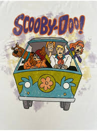
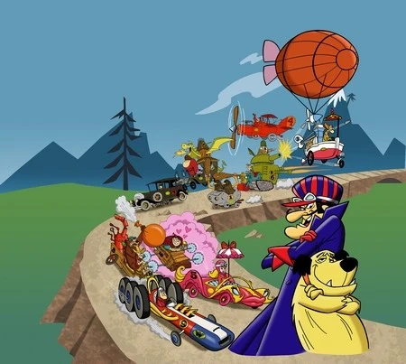

Scooby Doo
Ano: 1969
Um grupo de adolescentes e seu cachorro falante resolvem mistérios envolvendo fantasmas e monstros.

Caverna do Dragão
Ano: 1983
Seis jovens são transportados para um mundo de fantasia onde devem encontrar o caminho de volta para casa.
Thundercats
Ano: 1985
Um grupo de felinos humanoides luta contra o mal para proteger seu planeta natal, Thundera.

Corrida Maluca
Ano: 1968
Uma corrida maluca ao redor do mundo com carros bizarros e personagens excêntricos.
Os Jetsons
Ano: 1962
Uma família futurista vivendo em um mundo de alta tecnologia e aventuras espaciais.
As Aventuras de Tintim
Ano: 1991
As emocionantes aventuras do jovem repórter Tintim e seu fiel cão Milu ao redor do mundo.